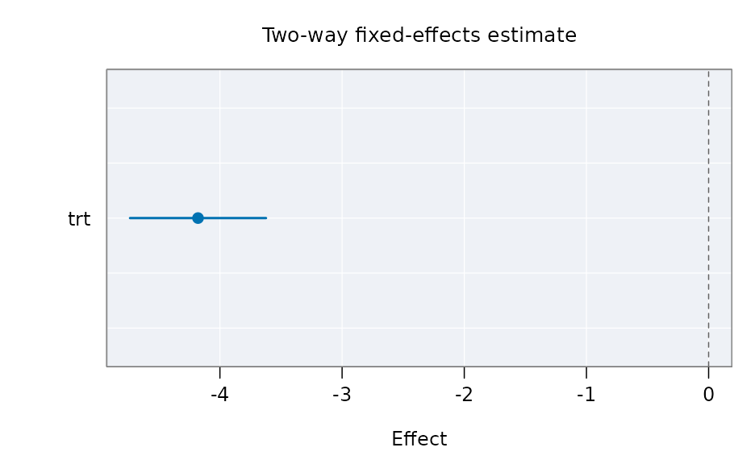
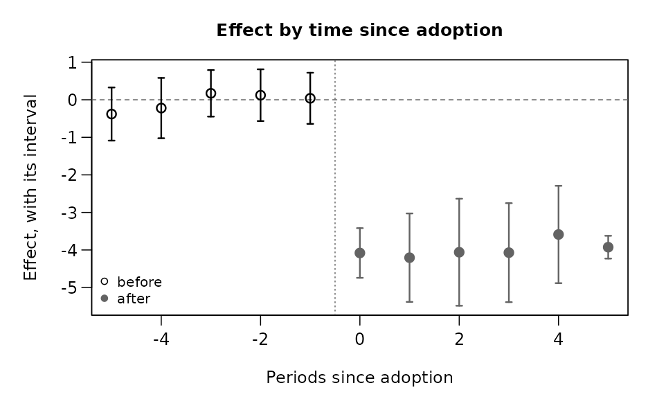
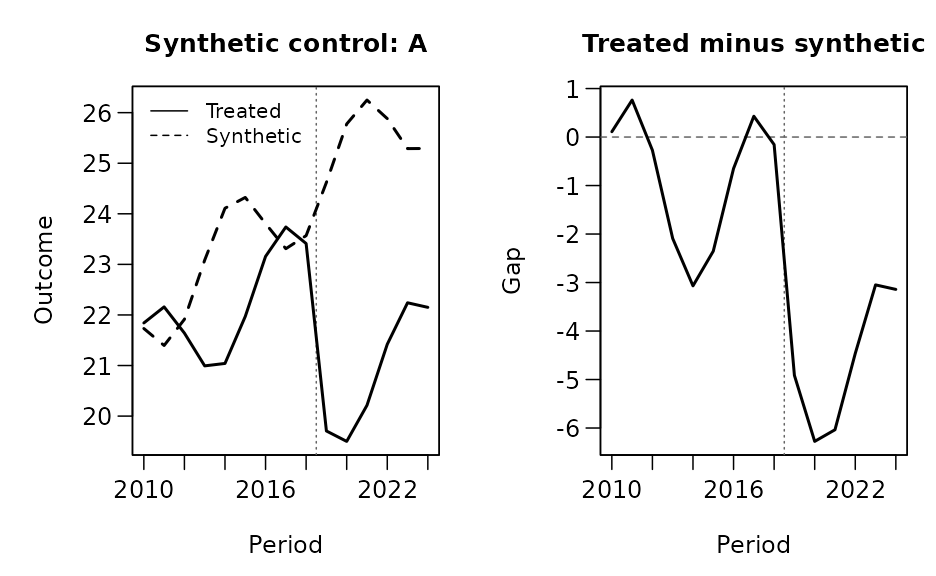
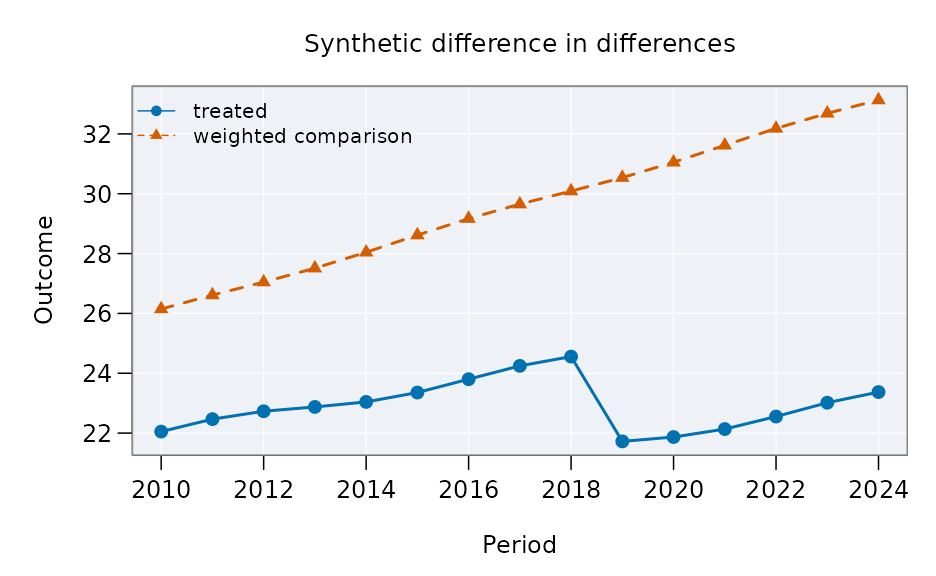

Experiments and policy evaluation
Source:vignettes/experiments-and-policy.Rmd
experiments-and-policy.RmdRandomisation, power, falsification tests, difference-in-differences, event studies and synthetic controls.
Each section is one help page: what the function is for, the example
of its help page as it runs, and the plot of its result where the
package draws one. ?name gives the arguments and the value
in full.
Experiments
Randomisation lists for a trial
rndalc(): Allocates participants to arms by simple,
permuted-block or stratified block randomisation from a seed, so that
the list can be made again exactly from the seed and the settings, in R
or on the command line.
a <- rndalc(40, seed = 12)
a
#> rndalc: 40 participants, seed 12
#> A B
#> all 20 20
head(a$alloc)
#> id block arm
#> 1 P01 1 A
#> 2 P02 1 B
#> 3 P03 1 A
#> 4 P04 1 A
#> 5 P05 1 B
#> 6 P06 1 B
s <- rndalc(arms = c("drug", "placebo"), ratio = c(2, 1),
strata = c(Toronto = 30, Ottawa = 24), seed = 7)
s$tab
#> drug placebo
#> Toronto 21 9
#> Ottawa 16 8
rndalc(20, block = 0, seed = 1)$tab
#> A B
#> all 13 7Permutation test within blocks
blkprm(): The randomisation test of a treatment effect
in a blocked (or stratified, or matched) experiment: the treatment
labels are permuted within each block, so that every arrangement keeps
each block’s number of treated units, as the design randomised them, and
the observed statistic is compared with its values over the arrangements
(Rosenbaum 2002, ch. 2; Good 2005, sec. 3.6).
set.seed(4)
d <- data.frame(site = rep(1:6, each = 4), t = rep(c(1, 0, 1, 0), 6))
d$y <- d$site + 0.8 * d$t + rnorm(24, sd = 0.5)
blkprm(d, "y", "t", "site", nperm = 999, seed = 1)
#> blkprm: difference in means 0.9952, p = 0.001 (two.sided, 999 arrangements within 6 blocks)
blkprm(d[1:12, ], "y", "t", "site", stat = "strat", exact = TRUE)$p
#> [1] 0.01851852Power of the one-way analysis of variance
pwranv(): The power of the F test of equal means in
k groups of n with Cohen’s effect size
f (the standard deviation of the group means about their
mean, over the common standard deviation), from the noncentral F
distribution; or, given the power wanted, the smallest whole
n per group that reaches it.
pwranv(3, n = c(20, 40, 60), f = 0.25)
#> k n f df1 df2 ncp fcrit power
#> 1 3 20 0.25 2 57 3.75 3.158843 0.3744311
#> 2 3 40 0.25 2 117 7.50 3.073763 0.6756745
#> 3 3 60 0.25 2 177 11.25 3.047012 0.8546381
pwranv(4, f = c(0.1, 0.25, 0.4), power = 0.8)
#> k n f df1 df2 ncp fcrit power
#> 1 4 274 0.10 3 1092 10.96 2.613053 0.8007324
#> 2 4 45 0.25 3 176 11.25 2.655939 0.8039869
#> 3 4 19 0.40 3 72 12.16 2.731807 0.8234006Power by simulation
pwrsim(): The power of a two-arm trial found by
simulating it: for each control arm size in n and each
effect in eff, nsim trials are drawn, each is
tested, and the power is the share rejected at alpha, with
its Monte Carlo standard error and Wilson’s interval (Morris, White and
Crowther 2019). It answers what a formula cannot: an outcome that is
binary or a count, unequal arms, a permutation test.
pwrsim(c(20, 50), eff = c(0, 0.5), nsim = 400, seed = 1)
#> pwrsim: normal outcome, welch test (two.sided) at alpha 0.05, 400 trials per design
#> n n1 eff power se lo hi rej
#> 20 20 0.0 0.0375 0.009499178 0.02285503 0.06094384 15
#> 50 50 0.0 0.0350 0.009188988 0.02096129 0.05788514 14
#> 20 20 0.5 0.3425 0.023727292 0.29769102 0.39030535 137
#> 50 50 0.5 0.6925 0.023072914 0.64562516 0.73571260 277
pwrsim(100, eff = 0.15, fam = "binary", p0 = 0.3, nsim = 400,
seed = 2)$tab
#> n n1 eff power se lo hi rej
#> 1 100 100 0.15 0.585 0.0246361 0.536129 0.6322539 234Falsification with negative-control outcomes
falsctl(): Estimates the “effect” of the treatment on
outcomes it cannot have affected (negative controls: an outcome measured
before treatment, or one with no plausible path from it), by the same
regression as the outcome of interest. An association with a negative
control points to confounding or another bias that the adjustment did
not remove (Lipsitch, Tchetgen Tchetgen and Cohen 2010; Shi, Miao and
Tchetgen Tchetgen 2020).
set.seed(5)
n <- 300
d <- data.frame(age = runif(n, 18, 60), u = rnorm(n))
d$t <- rbinom(n, 1, plogis(0.8 * d$u))
d$arrest <- 0.4 * d$t + 0.5 * d$u + rnorm(n)
d$prior <- 0.5 * d$u + rnorm(n) # before treatment: a control
d$height <- rnorm(n) # no path from treatment
falsctl(d, "arrest", "t", c("prior", "height"), x = "age")
#> falsctl: 1 of 2 negative control(s) associated with the treatment at alpha 0.05 (holm)
#> outcome role est se stat p lo hi pperm padj
#> arrest primary 0.8024 0.1308 6.134 2.730e-09 0.5450 1.059832 NA NA
#> prior control 0.3816 0.1282 2.976 3.159e-03 0.1293 0.633989 NA 0.006318
#> height control -0.2236 0.1171 -1.909 5.720e-02 -0.4541 0.006887 NA 0.057202Does the analysis recover a planted effect?
plntfx(): Plants effects of known size in the real data
and checks that the analysis finds them: the outcome is shuffled across
rows, which removes whatever association it had with the treatment and
the covariates while keeping its distribution, an effect
eff is added to the treated (y* = shuffled y + eff d), and
the analysis is run again, nrep times for each effect. An
analysis that is biased, or whose intervals are too narrow, shows it
here on data where the truth is known, a positive control in the sense
of Lipsitch, Tchetgen Tchetgen and Cohen (2010).
set.seed(6)
d <- data.frame(age = runif(200, 18, 60), t = rbinom(200, 1, 0.4))
d$y <- 0.02 * d$age + rnorm(200)
plntfx(d, "y", "t", x = "age", eff = c(0, 0.25, 0.5), nrep = 200,
seed = 1)
#> plntfx: 3 of 3 planted effect(s) recovered within tolerance over 200 shuffles
#> eff mean bias sd rmse cover rej tol ok
#> 0.00 -0.002595 -0.002595 0.1514 0.1511 0.93 0.070 0.03212 TRUE
#> 0.25 0.247405 -0.002595 0.1514 0.1511 0.93 0.395 0.03212 TRUE
#> 0.50 0.497405 -0.002595 0.1514 0.1511 0.93 0.920 0.03212 TRUESpecification curve
specrv(): The estimate of a treatment effect under every
reasonable specification at once, and whether the specifications as a
whole show an effect: the specification curve of Simonsohn, Simmons and
Nelson (2020). A finding that holds under one specification only is
fragile; one that survives the choices an analyst could defensibly have
made is not.
set.seed(7)
n <- 200
d <- data.frame(t = rbinom(n, 1, 0.5), age = runif(n, 18, 60),
prior = rpois(n, 2), male = rbinom(n, 1, 0.5))
d$arrest <- 0.3 * d$t + 0.1 * d$prior + rnorm(n)
d$charge <- 0.2 * d$t + 0.1 * d$prior + rnorm(n)
s <- specrv(d, c("arrest", "charge"), "t", opt = c("age", "prior",
"male"), nsim = 200, seed = 1)
s
#> specrv: 16 specifications, 0 significant; perm null, 200 data sets
#> stat obs p
#> median 0.1427 0.06468
#> nsig 0.0000 1.00000
#> z 3.9272 0.07463
head(s$spec)
#> outcome ctrl est se stat p lo hi
#> 1 arrest none 0.2145197 0.1434022 1.495931 0.13626394 -0.06827189 0.4973113
#> 2 arrest age 0.2124390 0.1436782 1.478575 0.14085117 -0.07090585 0.4957839
#> 3 arrest prior 0.2389817 0.1435041 1.665330 0.09743638 -0.04401974 0.5219832
#> 4 arrest age + prior 0.2373957 0.1437597 1.651337 0.10027101 -0.04611867 0.5209100
#> 5 arrest male 0.2095342 0.1439181 1.455926 0.14700476 -0.07428369 0.4933520
#> 6 arrest age + male 0.2077787 0.1442450 1.440457 0.15133357 -0.07669274 0.4922501
#> sig
#> 1 FALSE
#> 2 FALSE
#> 3 FALSE
#> 4 FALSE
#> 5 FALSE
#> 6 FALSEPolicy evaluation
A simulated policy panel for the examples
polex(): Twenty districts in four regions over 36
months; a reform adopted region by region in three stages (months 13, 19
and 25), with the fourth region never adopting it; crime and arrest
rates and counts. The numbers are made up, with a known effect of the
reform (a fall of 3 in the crime rate per 100,000), so the examples and
tests can check that each estimator recovers it.
# the panel is simulated: made-up numbers with a known effect of -3
p <- polex()
head(p)
#> district region month refmonth reformed population logpop crimes crmrate arrrate
#> 1 D01 R1 1 13 0 152152 11.93264 80 39.732 15.394
#> 2 D01 R1 2 13 0 152152 11.93264 56 42.708 16.387
#> 3 D01 R1 3 13 0 152152 11.93264 68 41.228 16.043
#> 4 D01 R1 4 13 0 152152 11.93264 68 43.296 17.148
#> 5 D01 R1 5 13 0 152152 11.93264 62 42.036 15.443
#> 6 D01 R1 6 13 0 152152 11.93264 59 40.197 15.568
# the same seed gives the same panel
identical(polex(7), polex(7))
#> [1] TRUEDifference in differences with two-way fixed effects
didfe(): The effect of a policy on a unit-by-period
panel (towns by year, beats by month, courts by quarter) from a
regression of the outcome on the treatment with unit and period fixed
effects, with standard errors clustered by unit or by any coarser
grouping, one-way or two-way. Counts can be fitted by Poisson or
negative binomial regression with the same effects. Options give the
estimate leaving out each treated unit in turn, its Goodman-Bacon
decomposition, and the estimate after matching treated units to
comparison units on their outcomes before treatment.
# twelve towns over ten years; four adopt a by-law in 2019, four in 2021
d <- expand.grid(year = 2015:2024, town = LETTERS[1:12])
i <- match(d$town, LETTERS)
first <- c(2019, 2019, 2019, 2019, 2021, 2021, 2021, 2021, NA, NA, NA, NA)
d$bylaw <- as.integer(!is.na(first[i]) & d$year >= first[i])
d$rate <- 30 + i + 0.5 * (d$year - 2015) - 4 * d$bylaw + sin(seq_len(120))
r <- didfe(d$rate, d$town, d$year, d$bylaw)
r
#> didfe: ols, 120 rows, 12 units, 10 periods, 12 clusters
#> term est se lo hi stat p
#> trt -4.179346 0.2529069 -4.73599 -3.622702 -16.52524 4.095738e-09
#> comparison mean 41.26246, relative effect -0.1012869
# its comparisons, and each adopting town left out in turn
didfe(d$rate, d$town, d$year, d$bylaw, bacon = TRUE, loo = TRUE)$bacon
#> type treated control est weight
#> 1 treated vs never 2019 Inf -4.081194 0.375
#> 2 treated vs never 2021 Inf -4.029237 0.375
#> 3 earlier vs later 2019 2021 -4.561454 0.125
#> 4 later vs earlier 2021 2019 -4.542020 0.125
# the simulated panel of polex(): a reform with a known effect of -3
p <- polex()
didfe(p$crmrate, p$district, p$month, p$reformed)
#> didfe: ols, 720 rows, 20 units, 36 periods, 20 clusters
#> term est se lo hi stat p
#> trt -3.23164 0.1164121 -3.475293 -2.987986 -27.76034 7.66007e-17
#> comparison mean 26.52167, relative effect -0.121849
plot(r)
An event study: the effect period by period around adoption
evtst(): Leads and lags of a policy’s adoption from a
two-way fixed-effects regression on indicators of the time since
adoption, with the joint test that the leads are zero (no effect before
the policy, the testable part of parallel trends), and the raw mean
outcome of each adoption cohort around its adoption.
d <- expand.grid(year = 2015:2024, town = LETTERS[1:12])
i <- match(d$town, LETTERS)
d$first <- c(2019, 2019, 2019, 2019, 2021, 2021, 2021, 2021,
NA, NA, NA, NA)[i]
on <- !is.na(d$first) & d$year >= d$first
d$rate <- 30 + i + 0.5 * (d$year - 2015) - 4 * on + sin(seq_len(120))
e <- evtst(d$rate, d$town, d$year, d$first, leads = 3, lags = 3)
e
#> evtst: 120 rows, 12 clusters
#> evtm est se lo hi stat p
#> -3 -0.09567324 0.5231309 -1.2470766 1.0557301 -0.1828859 8.582148e-01
#> -2 0.05394300 0.3573220 -0.7325173 0.8404033 0.1509647 8.827364e-01
#> -1 0.00000000 NA NA NA NA NA
#> 0 -4.13423655 0.2277190 -4.6354427 -3.6330304 -18.1549928 1.505547e-09
#> 1 -4.25980824 0.4295541 -5.2052505 -3.3143660 -9.9168141 8.036081e-07
#> 2 -4.29625671 0.6385691 -5.7017379 -2.8907756 -6.7279431 3.251955e-05
#> 3 -4.13228464 0.4571512 -5.1384677 -3.1261016 -9.0392074 2.008834e-06
#> leads jointly zero: F = 0.07293073 on 2 and 11 df, p = 0.9301109
e$pre
#> f df1 df2 p
#> 1 0.07293073 2 11 0.9301109
# how far trends may bend before the effect is lost
evtst(d$rate, d$town, d$year, d$first, leads = 3, lags = 3,
mbar = c(0, 1, 2), seed = 1)$sens
#> mbar lob upb lo hi
#> 1 0 -4.205647 -4.205647 -4.930333 -3.4716191
#> 2 1 -4.579687 -3.831606 -7.339214 -1.5703317
#> 3 2 -4.953728 -3.457565 -9.831768 0.8305316
# the simulated panel of polex(): a reform with a known effect of -3
p <- polex()
evtst(p$crmrate, p$district, p$month, p$refmonth, leads = 3,
lags = 3)$est
#> evtm est se lo hi stat p
#> 1 -3 0.08755551 0.3504296 -0.645902 0.821013 0.249852 8.053833e-01
#> 2 -2 0.46611111 0.4549055 -0.486017 1.418239 1.024633 3.184058e-01
#> 3 -1 0.00000000 NA NA NA NA NA
#> 4 0 -3.15973333 0.4472770 -4.095895 -2.223572 -7.064377 1.009440e-06
#> 5 1 -3.12400000 0.4185681 -4.000073 -2.247927 -7.463541 4.625249e-07
#> 6 2 -3.39773333 0.5021704 -4.448788 -2.346679 -6.766096 1.834298e-06
#> 7 3 -3.06167839 0.3638868 -3.823302 -2.300055 -8.413821 7.860720e-08
plot(e)
Effects of a policy adopted at different times
stgdid(): Difference-in-differences estimators for
staggered adoption that never use an already-treated unit as a control:
the group-time effects of Callaway and Sant’Anna (2021), optionally with
covariates; the regression on cohort-period cells of Wooldridge (2021);
and, for a treatment that switches on and off, the estimator of de
Chaisemartin and D’Haultfoeuille (2020) with its placebo. Standard
errors come from the cluster bootstrap.
d <- expand.grid(year = 2015:2024, town = LETTERS[1:12])
i <- match(d$town, LETTERS)
d$first <- c(2019, 2019, 2019, 2019, 2021, 2021, 2021, 2021,
NA, NA, NA, NA)[i]
on <- !is.na(d$first) & d$year >= d$first
d$rate <- 30 + i + 0.5 * (d$year - 2015) - 4 * on + sin(seq_len(120))
s <- stgdid(d$rate, d$town, d$year, d$first, reps = 99, seed = 1)
s$overall
#> term est se lo hi
#> 1 att -4.034678 0.4943916 -5.003667 -3.065688
s$dynamic
#> evtm est se lo hi
#> 1 -5 -0.37997631 0.3609287 -1.0873837 0.3274310
#> 2 -4 -0.22087536 0.4097379 -1.0239469 0.5821962
#> 3 -3 0.17184724 0.3162810 -0.4480521 0.7917466
#> 4 -2 0.12208141 0.3516011 -0.5670441 0.8112069
#> 5 -1 0.03901677 0.3476043 -0.6422751 0.7203086
#> 6 0 -4.07991970 0.3376486 -4.7416987 -3.4181407
#> 7 1 -4.20529807 0.6010068 -5.3832497 -3.0273464
#> 8 2 -4.06033981 0.7271590 -5.4855453 -2.6351344
#> 9 3 -4.07107236 0.6724557 -5.3890612 -2.7530835
#> 10 4 -3.58751419 0.6612129 -4.8834677 -2.2915606
#> 11 5 -3.92600168 0.1549628 -4.2297231 -3.6222803
# a by-law some towns repeal
d$law <- as.integer(on & !(i == 1 & d$year >= 2022))
stgdid(d$rate, d$town, d$year, trt = d$law, mthd = "dcdh", reps = 49,
seed = 1)$overall
#> term est se lo hi n
#> 1 effect -3.6698465 0.4276516 -4.5080282 -2.8316647 9
#> 2 placebo -0.0742311 0.3569557 -0.7738514 0.6253892 9
# the simulated panel of polex(): a reform with a known effect of -3
p <- polex()
stgdid(p$crmrate, p$district, p$month, p$refmonth, reps = 49,
seed = 1)$overall
#> term est se lo hi
#> 1 att -2.825844 0.3376925 -3.48771 -2.163979
plot(s)
Synthetic control for one treated unit
synthc(): A weighted average of units never treated that
tracks the treated unit before the policy, as its counterfactual after;
with the placebo test that runs the same method on every comparison
unit.
d <- expand.grid(year = 2010:2024, town = LETTERS[1:8])
i <- match(d$town, LETTERS)
d$first <- ifelse(d$town == "A", 2019, NA)
d$rate <- 20 + i + (d$year - 2010) * (0.2 + i / 20) +
sin(seq_len(120)) - 3 * (d$town == "A" & d$year >= 2019)
s <- synthc(d$rate, d$town, d$year, d$first)
s
#> synthc: unit A, root mean squared gap 1.513816 before and 4.813741 after; placebo p 0.125
#> unit w
#> B 0.97743517
#> C 0.02256483
s$path
#> time treated synth gap
#> 1 2010 21.84147 21.73204 0.1094300
#> 2 2011 22.15930 21.39643 0.7628652
#> 3 2012 21.64112 21.91334 -0.2722228
#> 4 2013 20.99320 23.08438 -2.0911860
#> 5 2014 21.04108 24.10976 -3.0686850
#> 6 2015 21.97058 24.32360 -2.3530189
#> 7 2016 23.15699 23.80616 -0.6491748
#> 8 2017 23.73936 23.31002 0.4293338
#> 9 2018 23.41212 23.56819 -0.1560760
#> 10 2019 19.70598 24.62017 -4.9141882
#> 11 2020 19.50001 25.77562 -6.2756096
#> 12 2021 20.21343 26.24909 -6.0356627
#> 13 2022 21.42017 25.88213 -4.4619607
#> 14 2023 22.24061 25.28897 -3.0483649
#> 15 2024 22.15029 25.29182 -3.1415360
plot(s)
Synthetic difference in differences
sdidx(): The estimator of Arkhangelsky et al. (2021) for
units adopting a policy in one period: comparison units weighted so that
their path before adoption parallels the treated units’, periods before
adoption weighted so that they predict the comparison units’ level
after, and the difference in differences taken with both weights.
d <- expand.grid(year = 2010:2024, town = LETTERS[1:10])
i <- match(d$town, LETTERS)
d$first <- ifelse(i <= 3, 2019, NA)
d$rate <- 20 + i + (d$year - 2010) * (0.2 + i / 20) +
sin(seq_len(150)) - 3 * (i <= 3 & d$year >= 2019)
sdidx(d$rate, d$town, d$year, d$first)
#> sdidx: standard error by jackknife
#> est se lo hi
#> -4.019258 0.2406598 -4.490942 -3.547573
Inference for a difference in differences with few clusters
wcbx(): Tests of the two-way fixed-effects effect of
didfe() that stay accurate when a policy was assigned to a
handful of clusters (districts, states), where the cluster-robust t test
over-rejects: the restricted wild cluster bootstrap, and the permutation
of the adoption dates across clusters; and the power of a design
simulated on real untreated data.
d <- expand.grid(year = 2015:2024, town = LETTERS[1:8])
i <- match(d$town, LETTERS)
d$bylaw <- as.integer(i <= 3 & d$year >= 2019)
d$rate <- 30 + i + 0.5 * (d$year - 2015) - 2 * d$bylaw + sin(seq_len(80))
# eight towns: every one of the 2^8 sign patterns
wcbx(d$rate, d$town, d$year, d$bylaw)
#> wcbx: wild, 8 clusters, 256 draws (all enumerated)
#> est stat p lo hi
#> -1.987082 -9.207341 0.0078125 -2.524054 -1.431829
# every assignment of the by-law to three of the eight towns
wcbx(d$rate, d$town, d$year, d$bylaw, mthd = "perm")$res
#> outcome est stat p pstep
#> 1 y1 -1.987082 -9.207341 0.01785714 0.01785714
# the simulated panel of polex(), its four regions the clusters
p <- polex()
wcbx(p$crmrate, p$district, p$month, p$reformed, clus = p$region)
#> wcbx: wild, 4 clusters, 16 draws (all enumerated)
#> est stat p lo hi
#> -3.23164 -19.51674 0.125 -Inf InfWestfall-Young stepdown p-values
wystep(): Adjusted p-values for several hypotheses
tested together, from the joint null distribution of their statistics
(permutations or bootstrap draws), holding the family-wise error rate
while using the correlation between the tests.